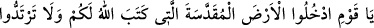
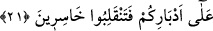

müddet içinde) yeryüzünde şaşkın şaşkın dolaşacaklar. Artık sen, yoldan çıkmış
toplum için üzülme.» buyurdu.
“Mûsâ kavmine demişti ki:” Yani ey Muhammed Hz. Mûsâ (a.s.) İsrâiloğulları’na
nasîhat ederek “Ey kavmim, Allah’ın size olan nîmetini hatırlayın.” dediği zamanı ehl-
i kitaba hatırlat. “Zîrâ, O, içinizden” Allah sizin yakınlarınızdan “peygamberler
çıkardı,” sizi onlarla irşad ve teşrîf etmişti. İsrâiloğulları’na gönderilen peygamberler
başka hiçbir kavme gönderilmemiştir. Bir kavimde şerefli ve faziletlilerin çok olması, o
kavim için şereftir. Peygamberlikten daha büyük şeref yoktur.
“ve sizi hükümdarlar kıldı.” Yani sizin içinizden veya sizden pek çok hükümdarlar
çıkardı. Öyle ki onların peygamberleri gibi hükümdarları da çoktu. Allah âyette onların
hepsini nîmetini hatırlatma bakımından hükümdarlar gibi zikretmiştir.. Çünkü kralların
yakınları övünürken “Kral, biziz.” derler.
Süddî bu ifâdeyi şöyle tefsir etmiştir: Yani siz, Fir’avn’un krallığında kıptîlerin
elinde ehl-i cizye gibiyken, Allah sizi kurtarıp kendi başınıza hür kimseler hâline
getirmiştir.
İbn Abbas (r.anhümâ) ise cümleye: “Sizi pek çok hizmetçi ve köle sâhibi kıldı.”
şeklinde mânâ vermiştir. İlk olarak hizmetçi edinenler onlardır. İsrâiloğullarından önce
insanlar hizmetçiye mâlik değillerdi. Bâzıları da derler ki, bir kimsenin sığınacağı
karısı, barındığı evi ve kendisine hizmet eden hizmetçisi olduğunda o krallardan sayılır.
Yine bâzıları da içerisinde akan suyu bulunan geniş eve sahip bir kimseye melik
derlerdi.
“Âlemlerden hiçbir kimseye vermediğini size verdi.” Mesela denizde yardım edip
düşmanı orada boğdu, bulutlarla sizi gölgeledi, kudret helvası ve bıldırcın eti vesâir
şeyleri ihsân etti. Bütün bunlar, Allah’ın size verdiği büyük ihsanlardır. Âlemlerden
murad, onlara kadar gelmiş geçmiş olan milletlerdir.
21- Ey kavmim! Allah’ın size (vatan olarak) yazdığı mukaddes toprağa girin ve
arkanıza dönmeyin, yoksa kaybederek dönmüş olursunuz.
“Ey kavmim, Allah’ın size yazdığı mukaddes toprağa girin.” Orası şirkten
temizlenmiş ve peygamberlerle mü’minlerin ikâmetgâhı kılınmış olan Kudüs’tür. Yani
Allah levh-i mahfuzda eğer îman ve itâat ederseniz orasının sizin ikâmetgâhınız
olacağını yazmıştır, demektir. Çünkü isyan ettikten sonra Allah: “Öyleyse orası onlara
kırk yıl yasaklanmıştır.” (el-Mâide, 5/26) buyurmuştur. “ve arkanıza dönmeyin.” Yani